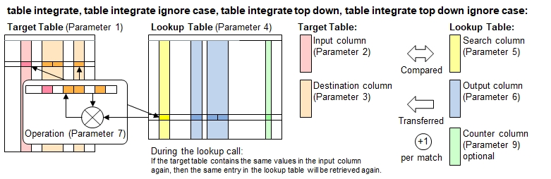

Function Names
table integrate, table integrate ignore case, table integrate top down, table integrate top down ignore caseDescription
These functions work very similarly like the corresponding table lookup() function, with the exception that the data retrieved from the lookup table will not
be simply written back to the target table, but an operation is performed with the data already existing in the target table with the retrieved data
and then written back. Example: You look up data for some numbers and want to add them to the already existing values in the target table.
If the suffix ignore case is added to the function name, then all comparisons made are case insensitive.

If a large lookup table is considered, but you know that most items looked up lie in to rows (say: roughly first 30 rows), then you may
experience a performance improvement using the function name table integrate top down ... instead. The output is the same in both cases.
Additional features:
- An expression to select rows (8th function parameter) can be specified to limit the lookup process to selected rows.
- An additional column (9th function parameter) can be specified in the lookup table to count the number of matches.
Call as: procedure or function
Restrictions
Indirect parameter passing is disabled
This function provides a table context for partial table specifications with table name and row number for selected function parameters
Parameter count
6 - 9
Parameters
| No. | Type | Description |
|---|---|---|
| 1. input |
literal | Name of target table The table referred here is assumed to be the more recent table. |
| 2. input |
table columns | Input columns Specify 1 or more columns in the input table which contains the information to compare with the search columns in the lookup table.
|
| 3. input |
table columns | Destination columns Specify columns in the input table where to copy the information retrieved from output columns in the lookup table.
The column header names do not need to be the same the corresponding headers in the lookup table.
Example: { Phone Number, Fax Number } when looking up a phone directory table.
|
| 4. input |
literal | Name of lookup table The table referred here is assumed to be the more recent table. |
| 5. input |
table columns | Search columns Specify 1 or more columns in the lookup table which contains the information to compare with the corresponding inputs columns in the target table.
|
| 6. input |
table columns | Output columns Specify columns in the lookup table for the information to be retrieved and copied to the destination columns in the target table.
The column header names do not need to be the same the corresponding headers in the lookup table.
Example: { Phone Number, Fax Number } when looking up a phone directory table.
|
| Opt. 7. input |
parameter set or literal | Operation Identifier Specify one of the table integration operation identifiers
|
| Opt. 8. code |
expression :literal |
Expression to select rows Same as 7th function parameter in table lookup(). |
| Opt. 9. input |
table column | Counter column Same as 8th function parameter in table lookup().
Hint: If you need this function parameter, but not the 8th function parameter, then write true into the 8th parameter. Default value: {} (no column selected) |
Return value
| Type | Description |
|---|---|
| numeral | Number of lookups made Every successful lookup (input columns match with search columns are matching) will count 1. |
Examples
table initialize( lookup,
{ { Names, Sports, Scores },
{ Abel, tennis, 10 }, { Bea, squash, 14 },
{ Chuck, racquetball, 13 }, { Dan, tennis, 8 },
{ Eva, squash, 9 }, { Finn, tennis, 12 },
{ Gini, racquetball, 12 }, { Hugo, squash, 11 } } );
table initialize( target, {{ Sport, Name, Score 1, Score 2, Score 3, Score 4 },
{ racquetball, "", 5, 100, 12 },
{ squash, "", 5, 100, 12 },
{ tennis, "", 5, 300, 10 },
{ racquetball, "", 1, 100, 55 },
{ tennis, "", 5, 100, 12,8 } } );
// Picks the 1st match and integrates the results
count[] = table integrate( target, Sport, { Name, Score 1 .. Score 4 },
lookup, Sports, { Names, 4:Scores }, { overwrite, add, sub, max, average }, true, Counter );
echo("Lookup table polled:");
table list( lookup );
echo("Target table after lookup (", count[], " items found):");
table list ( target );Output
Lookup table polled:
0 : Names | Sports | Scores | Counter
1 : Abel | tennis | 10 | 2
2 : Bea | squash | 14 | 1
3 : Chuck | racquetball | 13 | 2
4 : Dan | tennis | 8 |
5 : Eva | squash | 9 |
6 : Finn | tennis | 12 |
7 : Gini | racquetball | 12 |
8 : Hugo | squash | 11 |
Target table after lookup (5 items found):
0 : Sport | Name | Score 1 | Score 2 | Score 3 | Score 4
1 : racquetball | Chuck | 18 | 87 | 13 | 6.5
2 : squash | Bea | 19 | 86 | 14 | 7
3 : tennis | Abel | 15 | 290 | 10 | 5
4 : racquetball | Chuck | 14 | 87 | 55 | 6.5
5 : tennis | Abel | 15 | 90 | 12 | 9
See also
table integrate fast
table integrate once
table integrate smart
table integrate smart once
table integrate with rules
table lookup
table expand
table digest